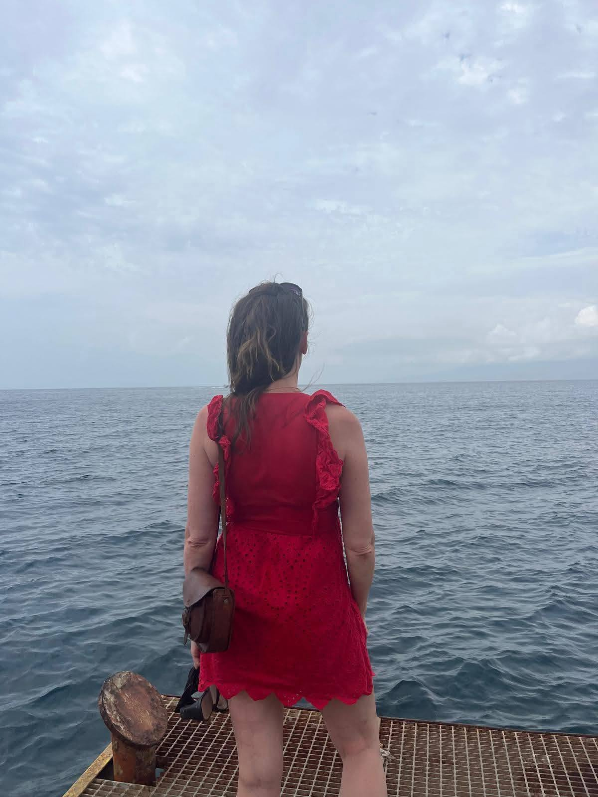
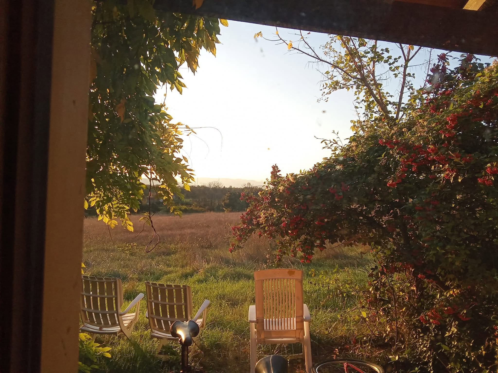
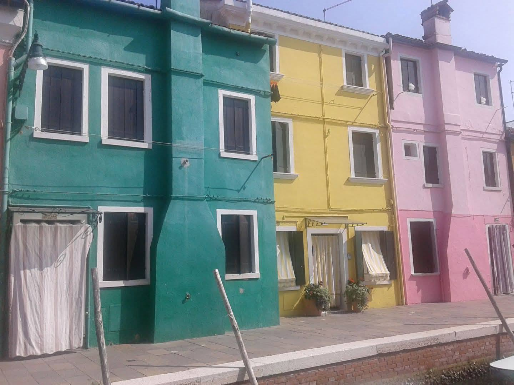
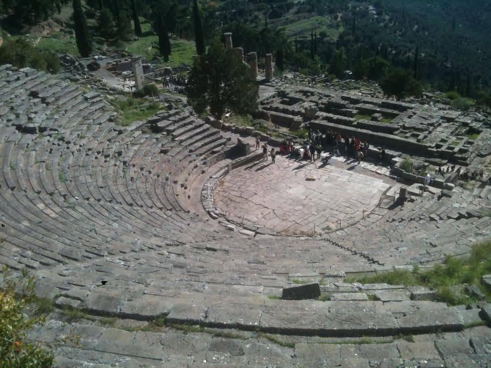
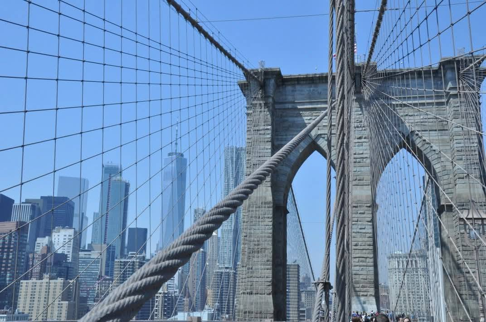
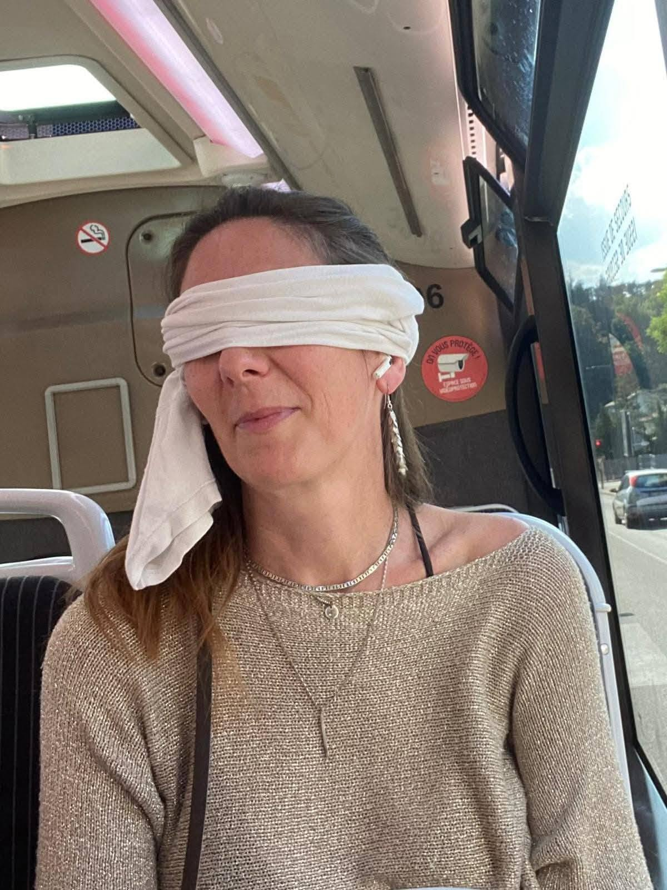
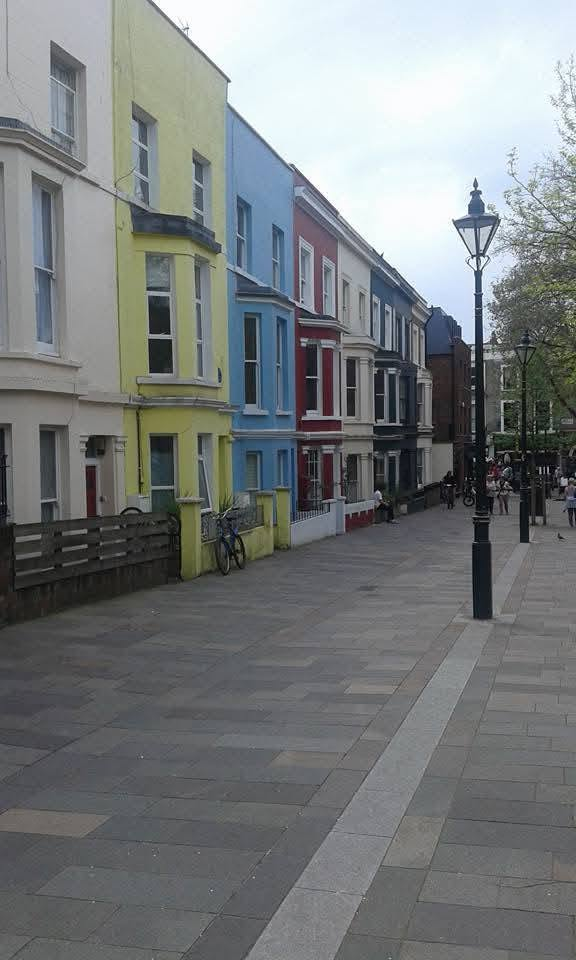
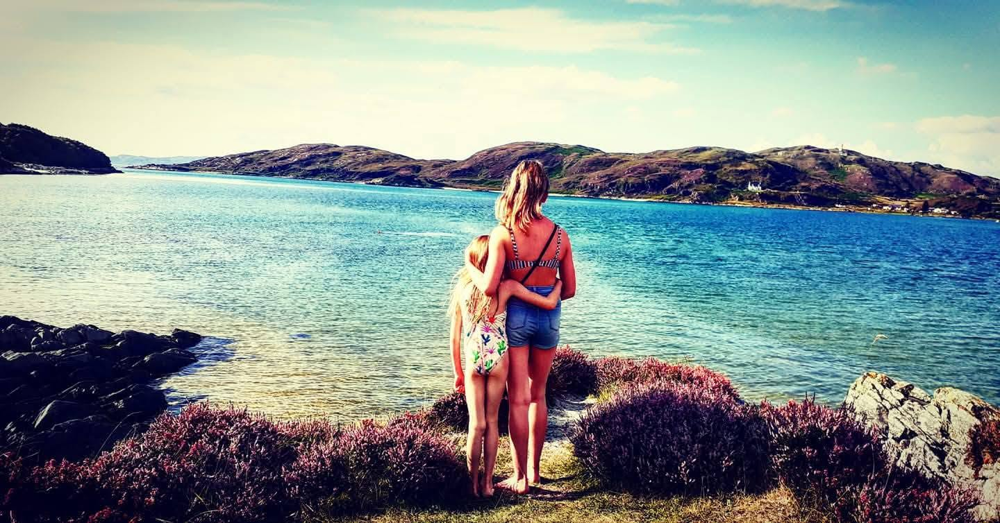
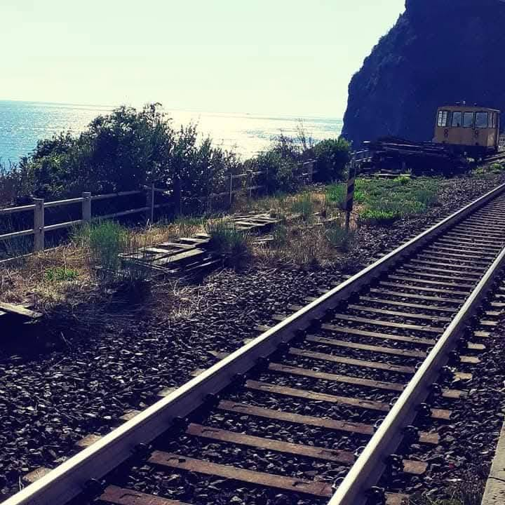

Voyager pour faire un pas de coté
Voyager pour mieux vivre : quand changer de décor devient un soin

Voyager pour mieux vivre : quand changer de décor devient un soin
Vous avez peut-être vu passer ces posts qui affirment qu’en Suède, des médecins prescriraient désormais… des voyages.
Pas comme une fuite, mais comme une réelle réponse à l’épuisement, au stress, à l’anxiété légère ou aux troubles du sommeil.
Que l’information soit strictement exacte ou un peu romancée, elle touche quelque chose de profond :
nous savons intuitivement qu’un changement d’environnement peut faire bouger quelque chose en nous que ni les ordonnances, ni les « bons conseils » ne parviennent à atteindre.
Aujourd’hui, j’ai envie de vous parler de ce lien entre voyage, santé psychique… et Gestalt.
Et aussi de vous partager comment certains voyages ont littéralement changé la trajectoire de ma vie.

Quand le décor change, la chimie intérieure change aussi
On pourrait croire qu’un voyage ne serait qu’une parenthèse agréable dans une vie trop remplie.
Mais ce qui se passe en nous est plus profond que ça.
Quand nous partons :
- nos repères habituels se déplacent : plus les mêmes trajets, les mêmes visages, les mêmes obligations ;
- notre corps est sollicité autrement : marcher, découvrir, sentir, voir ;
- notre cerveau reçoit de nouveaux stimuli : couleurs, sons, langues, odeurs, rythmes.
Tout cela vient modifier notre chimie interne : le stress diminue, l’attention s’ouvre, la curiosité se réveille.
Ce n’est pas de la magie, c’est de la plasticité : notre système nerveux est fait pour s’adapter et se réajuster quand il rencontre du nouveau… à condition d’y aller à notre rythme.
Et parfois, ce qui a besoin de bouger n’est pas « nous » en tant que personne, mais le contexte dans lequel nous vivons :
- nos horaires, nos relations, notre environnement de travail, nos habitudes épuisantes.
Un voyage devient alors un moyen très concret de regarder sa vie depuis un autre point de vue.


Quand voyager devient une ressource vitale : quelques jalons de ma propre histoire
Dans les moments charnières de ma vie, le voyage a été une ressource précieuse, presque un soin à part entière.
1. New York pour mes 40 ans : la traversée
J’ai fêté mes 40 ans à New York, en plein moment de remise en question professionnelle et de reconversion.
J’étais en train de quitter un ancien monde sans encore savoir à quoi ressemblerait le nouveau.
Me retrouver là-bas, au milieu des gratte-ciel, des bruits, des odeurs de food trucks, des métros bondés, c’était comme une mise en scène extérieure de ce qui se jouait en moi : un foisonnement, une peur aussi, et un appel très fort à oser autre chose.
Ce voyage m’a permis :
- de remettre les compteurs à zéro, loin des injonctions et du quotidien ;
- d’entendre une petite voix intérieure qui disait : « Tu peux créer ta façon d’exercer, même si ça ne ressemble à rien de connu » ;
- de ressentir dans mon corps que j’étais capable d’être ailleurs, autrement.
Ce séjour m’avait d’ailleurs été recommandé par mon médecin, un médecin d’une grande humanité, que j’adore.
Plutôt qu’un « simple » arrêt de travail, il m’a encouragée à prendre le large pour de vrai, à sortir du contexte qui m’épuisait pour retrouver du souffle ailleurs.
C’est rare d’entendre :
« Je pense qu’un voyage vous ferait autant de bien que n’importe quel médicament. »
Et pourtant, il avait raison.
D’une certaine manière, New York a été ma première « résidence » de reconversion.

2. Voyager seule (ou seule avec mes enfants) : éprouver ma capacité
Il y a eu aussi ces voyages seule, ou seule avec mes filles.
Ceux où l’on doit tout faire : trouver le bon bus, porter les valises, calmer les peurs, gérer les imprévus.
Ce sont des voyages qui confrontent… mais qui renforcent la sensation intime :
« Je peux. Nous pouvons. »
Ils m’ont aidée à :
- reprendre confiance en mes compétences ;
- sentir mon courage là où je me vivais parfois seulement fatiguée ;
- tisser avec mes filles des souvenirs communs qui restent comme des ancrages de force.


3. L’Écosse avec mes filles : reprendre souffle après la tempête
Parmi ces jalons, il y a ce voyage en Écosse, avec mes filles, durant l’été qui a suivi la pandémie de COVID, en pleine séparation.
Nous sortions d’une période où tout était restreint : les déplacements, les contacts, les projets.
Et en même temps, ma vie personnelle était en train de se défaire et de se redessiner.
L’Écosse a été pour nous :
- un espace-entre-deux : entre l’avant et l’après, entre l’ancienne configuration familiale et celle qui restait à inventer ;
- un temps pour respirer hors des contraintes du quotidien, loin des papiers, des décisions à prendre, des négociations épuisantes ;
- une manière de ressentir que, même au cœur d’une séparation, il pouvait exister des moments de beauté, de rire, de complicité.
Les paysages immenses, le vent, la pluie, les lumières changeantes ont joué un rôle presque thérapeutique :
ils accueillaient nos émotions sans rien demander en retour.
Ce voyage a ancré l’idée que nous pouvions traverser une épreuve familiale tout en continuant à vivre des expériences fortes ensemble.
Que notre lien mère–filles pouvait rester vivant, mouvant, nourrissant, même si la structure familiale changeait.


4. Retour à New York, cinq ans plus tard : l’ancrage
Cinq ans après mon premier voyage, je suis retournée à New York, cette fois avec mes filles.
Entre-temps, ma vie avait beaucoup changé : reconversion engagée, cabinet ouvert, nouvelles propositions professionnelles, un autre rythme de vie.
Revenir dans cette ville avec elles, c’était :
- valider dans le réel tout ce qui avait bougé depuis mon premier séjour ;
- ancrer ces changements dans notre histoire familiale ;
- leur montrer que l’on peut traverser des périodes de doute et construire, pas à pas, une vie plus ajustée à qui l’on est.
Ce deuxième voyage a été comme un sceau posé sur cette transformation :
un « avant/après » visible, partageable, célébré ensemble.
Si ce texte résonne pour vous, peut-être que votre corps sait déjà de quel type de voyage vous auriez besoin :
- un week-end au vert pour respirer ;
- un séjour plus long pour vous recentrer ;
- ou une résidence accompagnée, pour prendre soin à la fois de votre monde intérieur et de votre environnement.
Dans tous les cas, souvenez-vous :
vous n’êtes pas « trop fragile » parce que vous avez besoin de partir.
Vous êtes en train de prendre soin du contexte dans lequel votre esprit essaie, chaque jour, de rester vivant.
Et ça, c’est déjà un magnifique premier pas.